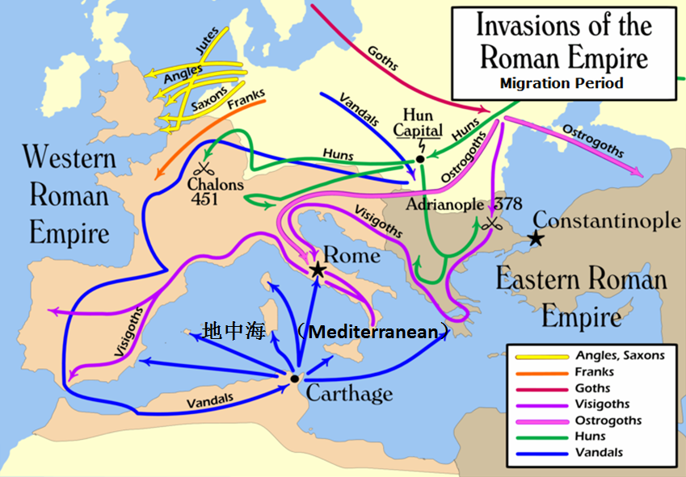

返回主页
日耳曼人大迁徙

“日耳曼（German）人大迁徙”其实是入侵罗马帝国的行动，被称为“野蛮人入侵”。现今的日耳曼人已经是有钱有势一族了。
The Migration Period, also known as the period of the Barbarian Invasions or of the Volkerwanderung ("migration of peoples"), was a period of intensified human migration in Europe from about 400 to 800 AD（公元）. Historians consider it to be the transition from Late Antiquity to the Early Middle Ages. This period was marked by profound changes both within the Roman Empire and beyond its "barbarian frontier". The migrants who came first were Germanic tribes such as the Goths, Vandals, Angles, Saxons, Lombards, Suebi, Frisii and Franks; they were later pushed westwards by the Huns, Avars, Slavs, Bulgars and Alans. Later migrations (such as the Arab conquest and Viking, Normans, Magyar, Moorish, Turkic, and Mongol invasions) also had significant effects (especially in North Africa, the Iberian peninsula, Anatolia and Central and Eastern Europe); however, they are outside the scope of the Migration Period.
印度也有移民迁出到欧洲的，比如吉普赛人、波希米亚人和弗拉门戈人。
version:1.0; jobnet@188.com © retter2012.com